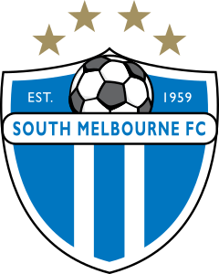
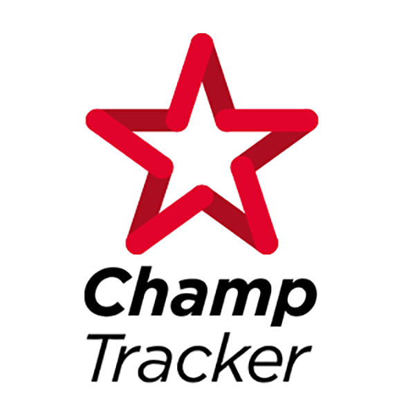

Senior Product Manager
I build products and take them to market. Most people do one or the other.
Disclaimer: Attribute ratings are illustrative and do not constitute a formal self-assessment.
I build products and take them to market.
Most people do one or the other.
15+ years across product management and product marketing, most recently leading product strategy for a $400M+ global payroll platform.
A decade as a Product Manager at Jetstar, carsales.com, ahm and Xero's NZ Payroll product, then Xero's Payroll leadership team, defining target segments, representing the customer in roadmap decisions, and setting go-to-market strategy across the UK, Australia and New Zealand.
Actively building with AI tools and optimising how I work, inside and outside the day job.
Disclaimer: Attribute ratings are illustrative and do not constitute a formal self-assessment.
15+ years across product marketing and product management, the last 7.5 of them in product marketing. First and most senior product marketer for Xero Payroll globally, covering a $400M+ portfolio across the UK, Australia and New Zealand, and a member of the Payroll leadership team alongside Product Managers, Designers and Engineers.
A decade as a Product Manager, working in agile teams from roadmap definition through to delivery. The move into product marketing at Xero didn't change the work, it changed the scope: sitting on the Payroll leadership team alongside Product Managers, Designers and Engineers, defining which customer segments to build for, and using that definition to shape both the roadmap and how it went to market.
Played competitive football for 25+ years, captaining teams to national youth and senior championships as a semi-professional. Founded The Football Practice, a youth coaching business that ran profitably for three years. Built Champ Tracker, a platform for players and coaches to build a professional profile and get discovered.
Led global product marketing strategy as first and most senior product marketer for Xero Payroll globally, covering the payroll and employee management portfolio across AU, NZ, and UK. The payroll platform is a $400M+ revenue portfolio processing $150B+ in annual payroll for 3M+ employees globally.
First and only Product Marketer for Xero Payroll globally, primary voice and champion for payroll across AU, NZ and UK markets. Developed global value propositions, messaging frameworks, and GTM capabilities as key member of Payroll leadership team.
Led NZ Payroll product within a global team. Defined product vision and 3-year strategy through market research and stakeholder consultation, managing delivery using agile and lean approaches.
Led digital transformation, guiding cross-functional teams to deliver customer-focused experiences aligned with digital-first strategy. Developed CRO roadmap to improve conversion and customer experience.
Managed product portfolio of 10 market-leading online brands, driving revenue growth, product innovation, and UX improvements while leading cross-functional teams across Product, UX, Marketing, Sales, and Customer Experience.
Drove eCommerce innovation for Jetstar's digital booking, mobile, and airport experiences. Managed development of 13 multi-language web and mobile sites.
A player, a coach, and a founder in sport. Not a product person who watches from the sideline.

Captained teams to national youth and senior championships. Developed the high-performance mindset, leadership under pressure, and competitive discipline that now informs every product and GTM decision.
Founded and scaled a youth football coaching business serving 50+ players across 5 weekly sessions. Built the curriculum, operations, customer experience and brand, running profitably for 3 years while working full-time in senior product marketing.

A platform for players and coaches to build a professional profile, tell their own story, and get discovered by people who would otherwise never see them. Life took over before I pushed it properly. The problem it was aimed at hasn't gone anywhere.